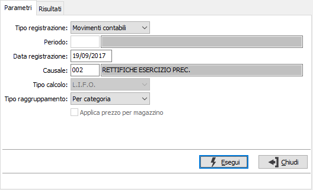
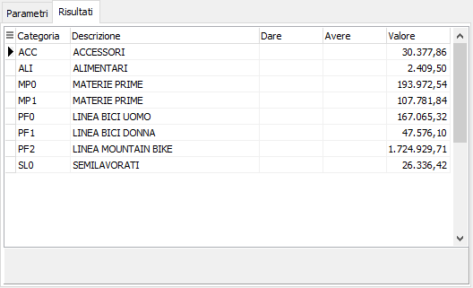

Contabilizzazione rimanenze
Il programma consente di generare i movimenti contabili o i movimenti di rettifica provvisori relativi alle rimanenze di magazzino.

TIPO REGISTRAZIONE: definisce se effettuare le registrazioni in contabilità oppure sui movimenti di rettifica.
PERIODO: attivo solo in presenza del modulo analisi di bilancio e valido per la registrazione delle rettifiche, consente di specificare il periodo di competenza dei movimenti che saranno generati. Sul campo sono attive le funzioni di ricerca (F9) sulla tabella stessa.
DATA REGISTRAZIONE: Indicare la data con cui si desidera siano registrati i movimenti generati dal programma.
CAUSALE: valido solo per la registrazione dei movimenti contabili, inserire la causale contabile idonea alla registrazione del movimento. Sul campo è attiva la ricerca (F9) sulla tabella Causali contabili.
TIPO CALCOLO: valido per la registrazione delle rettifiche, indicare il tipo di valorizzazione da utilizzare, valori possibili, prezzo medio, LIFO o FIFO se presenti i relativi moduli, costo ultimo, costo di mercato, da listino (presente in configurazione di magazzino).
TIPO RAGGRUPPAMENTO: indicare se i valori devono essere raggruppati per categoria merceologica o per codice inventario; come conti saranno utilizzati quelli presenti nelle rispettive tabelle.
APPLICA PREZZO PER MAGAZZINO: l'opzione è disponibile solo se la valutazione delle rimanenze è configurata a prezzo medio o costo ultimo carico; se spuntato viene utilizzato per la valorizzazione il prezzo specifico del magazzino altrimenti il prezzo complessivo del prodotto. In mancanza del prezzo medio/costo ultimo verrà utilizzato il prezzo medio/costo ultimo complessivo dell'articolo.
La pressione del pulsante Esegui visualizza nella pagina Risultati i valori calcolati con i relativi codici conto assegnati in relazione al tipo di raggruppamento selezionato.
La pressione del tasto Salva sulla toolbar principale dà inizio alla registrazione effettiva.
